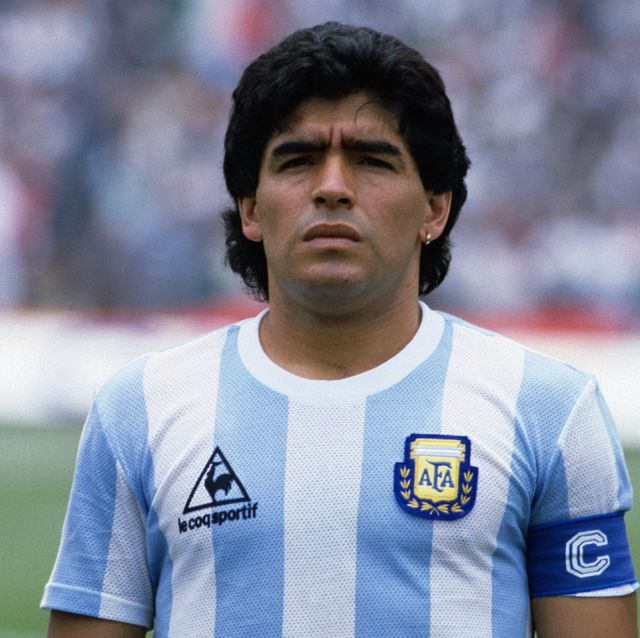

Zinedine Zidane
Zinédine Yazid Zidane (pronunciación en francés: /zi.ne.din zi.dan/; Marsella; 23 de junio de 1972), es un exfutbolista y entrenador francés, agente libre desde julio de 2021.
Como centrocampista ofensivo, está considerado como uno de los mejores jugadores de su generación. Así como uno de los mejores futbolistas de todos los tiempos, corroborado con el «Balón de Oro» de 1998, su nombramiento en tres ocasiones como «Jugador Mundial de la FIFA» (1998, 2000 y 2003), y como «mejor futbolista europeo de los últimos 50 años» por la UEFA.

Zidane jugando el derbi de italia frente al Inter de Milan.
Diego Maradona
Diego Armando Maradona (Lanús, 30 de octubre de 1960-Dique Luján, 25 de noviembre de 2020) fue un futbolista y entrenador argentino.
Como jugador, se desempeñó como mediocampista ofensivo o delantero, y es reconocido por numerosos especialistas, exfutbolistas y personalidades internacionales como «uno de los mejores futbolistas en la historia». Asimismo, ha sido catalogado por algunos medios como el «mejor jugador en la historia de la Copa Mundial», de la cual fue designado como el mejor jugador en su edición de 1986.

Maradona preparandose para cantar el himno frente a Inglaterra.
Edson Arantes
Edson Arantes do Nascimento (pronunciación en portugués: ɛtsõ (w)ɾɐ̃tʃiz du nɐsi mẽtu/; Três Corações, Minas Gerais; 23 de octubre de 1940), más conocido como Pelé (pronunciado /pelɛ/).
Es un exfutbolista brasileño que jugó como delantero y ha sido reconocido por muchos especialistas, exfutbolistas y aficionados internacionales como uno de los «mejores futbolistas de todos los tiempos», así como del Santos Fútbol Club, del Brasileirão, de la selección brasileña y de la Copa Mundial.
El rey en un partido amistoso contra chile.
Jorge Gonzalez
Jorge Alberto González Barillas, más conocido como «Mágico González» (n. San Salvador, El Salvador, 13 de marzo de 1958), es un exfutbolista salvadoreño, considerado por la IFFHS como el mejor en la historia de su país y el mejor jugador centroamericano del siglo XX.

El magico gonzalez jugando para su seleccion.